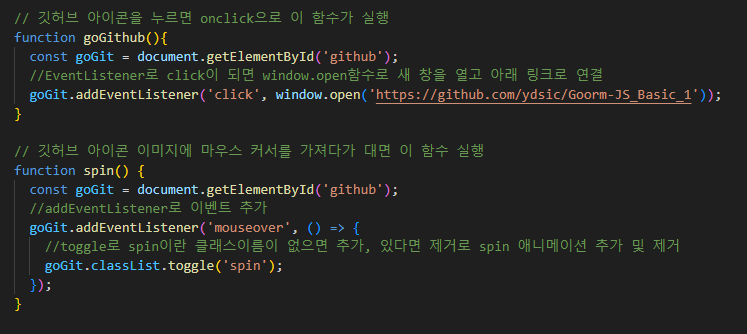

var, let, const 비교하기
자바스크립트에서 변수를 선언하는 세 가지 방법인 var, let, const의 차이점을 이해합니다.
var, let, const의 재선언 가능 여부, 재할당 가능 여부 등의 내용을 담은 비교표를 정리하여 제출합니다.
자바스크립트에서는 총 3가지의 변수를 선언하는 방법이 있다
var
var은 ES6 이전에 사용하던 변수 선언 방법인데 중복 선언, 호이스팅 등 문제들이 있어서 지금은 거의 사용되지 않는다.
let, const
let과 const는 ES6에서 등장한 변수 선언 함수로 var을 단점을 고친 함수이다.
중복선언이 불가능하며 호이스팅은 아직 사라지진 않았지만 변수 선언 이전에 호출을 하면 에러가 난다. (var은 호출도 되고 undefined으로 표기)
let과 const의 차이점이라면 let은 한 번 입력된 값이라고 해도 계속해서 수정이 가능하지만
const는 한 번 입력된 값은 절대 바꿀 수 없다는 차이점이 있다. (객체, 배열 내부 값 제외)
| 종류 | 재선언 | 호이스팅 현상 | 스코프 범위 | 데이터 재할당 |
|---|---|---|---|---|
| var | 가능 | 있음. 선언 이전에 호출까지 가능 | 함수 스코프 | 가능 |
| let | 불가능 | 있음. 선언 이전에 호출 시 에러 | 블록 스코프 | 가능 |
| const | 불가능 | 있음. 선언 이전에 호출 시 에러 | 블록 스코프 | 불가능(객체, 배열 내부 데이터 제외) |
비교 연산자 이해하기
자바스크립트의 비교 연산자 (==, ===, !=, !==, >, <, >=, <=)를 이해합니다.
비교 연산자를 활용한 간단한 코드를 작성하여 각 연산자의 동작 방식을 실습합니다.
비교 연산자를 활용한 간단한 코드를 제출합니다.
a == b (같다)
a === b (완전히 같다)
a != b (같지 않다)
a !== b (완전히 같지 않다)
a > b (b보다 a가 크다)
a < b (a보다 b가 크다)
a >= b (b보다 a가 크거나 같다)
a <= b (a보다 b가 크거나 같다)
예시코드
여기서 ==랑 ===의 차이는 ==는 값만 같으면 같다라고 해주지만
===는 값과 타입형까지 다 맞아야하는 조금 더 엄격한 기준이라고 생각하면 될 거 같다
브라우저에서 error debug
브라우저 콘솔을 사용하여 자바스크립트 오류를 디버깅하는 방법을 배웁니다.
F12 키를 눌러 개발자 도구를 열고, Console 탭과 Sources 탭을 사용하여 오류 메시지를 확인하고 오류를 해결하는 방법을 실습합니다.
F12 → Console → Sources 내용의 스크린샷을 제출합니다.
어떤 부분이 예상치 못한 에러가 발생한다면 개발자 도구를 열어서
Console 탭을 확인해보면 어떤 파일, 몇 번째 줄에서 에러가 발생했는지 확인이 가능하다
index.js 라는 파일 안에 58번쨰 줄에서 9번째 글자인 b라는 변수를 찾을 수 없다고 뜨는 내용
산술 연산자 이해하기
자바스크립트에서 사용할 수 있는 기본 산술 연산자 (+, -, *, /, %)를 이해합니다.
산술 연산자를 활용한 간단한 코드를 작성하여 각 연산자의 동작 방식을 배웁니다.
산술 연산자를 활용한 간단한 코드를 제출합니다.
동적인 웹페이지 구현하기
자바스크립트를 사용하여 동적인 웹 페이지를 구현합니다.
이벤트 리스너 등 자바스크립트의 다양한 기능을 활용하여 사용자와 상호작용할 수 있는 웹 페이지를 작성합니다.
동적인 웹 페이지 코드 파일을 제출합니다.
동적 웹페이지 제작 후 Netlify로 배포 후 Github 링크와 함께 제출
이 웹페이지를 만들면서 팀 스터디 팀원들에게도 깃허브 링크 공유와 주석을 추가함으로써
코드에 대한 피드백 및 다른 팀원은 이런 식으로 exp 미션을 진행했구나 하는 참고자료로 이용될 에정

아이콘을 누르면 깃허브로 이동합니다.
깃허브 아이콘을 눌렀을 때 그냥 이동보다는 EventListener을 이용하여 하나라도 더 함수를 사용해보면서 연습